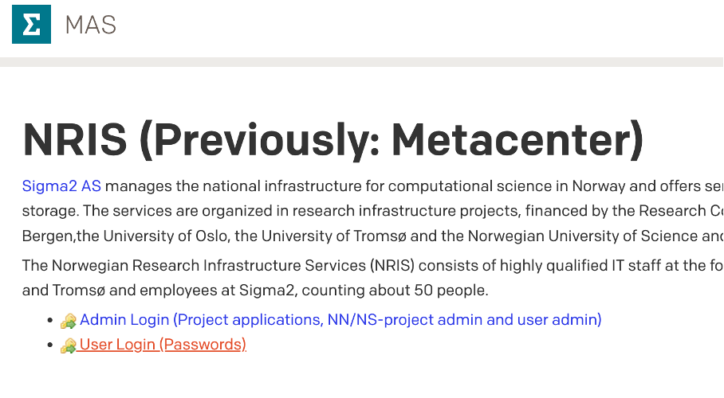
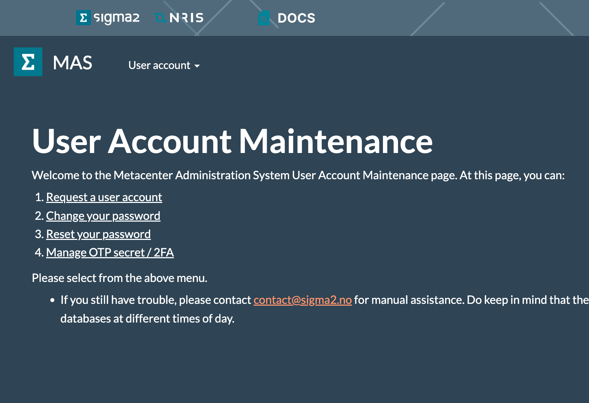
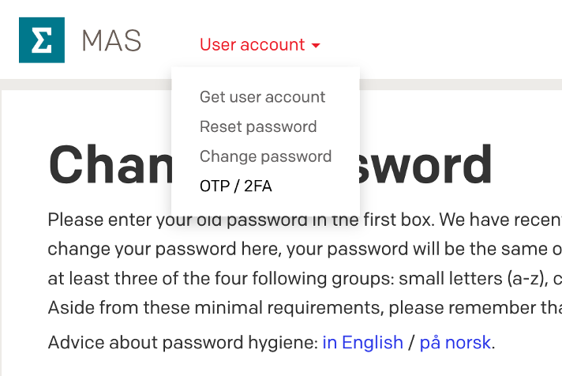
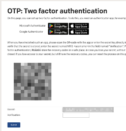
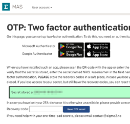

One-time-pad (OTP) / Two-factor authentication
All login nodes on Betzy, Saga, Olivia, and NIRD now require two-factor authentication when connecting through SSH.
To set up two-factor authentication for your user, follow these steps:
Go to https://www.metacenter.no, log in using “User Login (Passwords)”.
 First click User Login (Passwords)
Select “Manage OTP secret / 2FA” from the page or drop-down menu.


Install the Authenticator app if you don’t have one.
Scan the QR code with your Authenticator app.

Verify using the code from your app and click “Submit.”

Wait for the resources to sync the new information.
Video guide
[Video] 2FA setup guide for the national e-infrastructure systems
How to avoid typing the OTP code every time on Linux / macOS
On your Mac or Linux desktop or laptop, create a text file ~/.ssh/config
with, for example, the following contents:
Host saga
User myusername
HostName login.saga.sigma2.no
ControlMaster auto
ControlPath ~/.ssh/%r@%h:%p
where myusername is replaced appropriately.
This allows you to connect to the host using nickname saga by simply typing
ssh saga in the terminal.
It will look for the special file (a socket) in your ~/.ssh/ directory that
maintains the connection to the cluster. If it already exists and is open, it
will use it to create a connection without re-authenticating. If it doesn’t
exist, it will authenticate and create the file for subsequent use.
Note that all subsequent connections are dependent on the initial connection; if you exit or kill the initial connection, all other ones will also die. This can obviously be annoying if it happens accidentally. It’s easily avoided by setting up a master connection in the background:
$ ssh -CX -o ServerAliveInterval=30 -fN saga
The -fN makes the connection go into the background and sit idle after authenticating. (-C enables compression, -X allows X11 forwarding, and -o ServerAliveInterval=30 specifies the amount of time in seconds before the client sends a signal to the server to prevent dropped connections. These options are not related to ControlMaster but are almost always helpful)
How to avoid typing the OTP code every time on Windows sub-system for Linux (WSL)
OpenSSH for Windows does currently not support the ControlMaster module, but there is a workaround for this.
By installing WSL and
running an Ubuntu terminal, you will be able to use SSH as if you were using
a Linux computer. You can create the text file under ~/Ubuntu/home/user/.ssh/
and add the same contents as in the example above. Remember to save the text
file as config. If you then connect to the host nicknamed saga using
ssh saga in your Ubuntu terminal, it will create the same socket under
Ubuntu’s SSH directory as it would if you were to use a macOS/Linux computer. You
can run an Ubuntu terminal by typing the command ‘Ubuntu’ in your Windows terminal.
How to copy files without using 2FA/OTP
To copy files to and from login nodes without using two-factor authentication, you can use SFTP via custom TCP port 12, for example:
sftp -P 12 login.saga.sigma2.no
or via your preferred SFTP client, specifying port 12 and protocol
SFTP. With recent versions of OpenSSH, one can also use scp, for
instance:
scp -P 12 myfile login.saga.sigma2.no:somedir
(see man scp to see if your version supports the SFTP protocol)
Requirements:
This is only available if you have set up SSH-keys, see the guide in getting started.
This is only available on “Forskningsnett” (networks that Sikt (AS 224) announces). Use VPN to connect to your (Norwegian) institution’s network if you for example work from home.